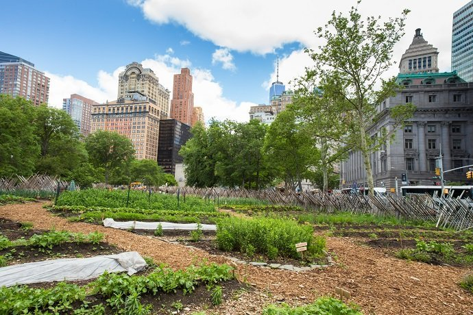

Through this series of articles, Metropolitics hopes to participate in the debate that has emerged in recent
years concerning the role of nature in the city, and of vegetation in particular: what forms can nature take
in our cities? What is the role of urban agriculture? How can our desire for urbanity be reconciled with our
desire for nature? What does this involve in terms of public development, governance and the training of
planners? What are the roles played by landscapes and public spaces in these processes? The challenge here
is to gain a better understanding of the ways in which cities can be planned and developed by more
effectively taking urbanites’ desire for nature into consideration and by bringing nature, walking for
pleasure and aesthetics to the fore without generating new socio-spatial inequalities.
